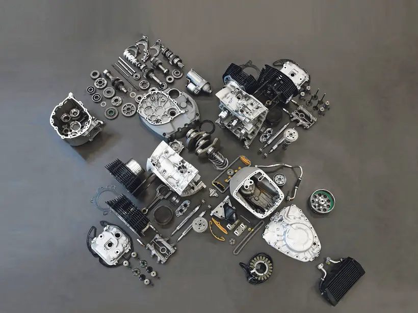

One reason I keep returning to traditional software architecture principles is because good architecture tends to endure.
A great example is the BMW boxer engine. The core architecture has remained recognizable since 1923. Materials changed. Electronics changed. Manufacturing changed. Performance changed dramatically. But the underlying design principles — the horizontally opposed flat-twin, the exposed drivetrain, the pushrod geometry — stayed consistent for more than a century.
I increasingly think enterprise agentic systems will evolve the same way. Not because the technology will stay the same — it won't. But because the architectural principles underneath them are older than the technology and will outlast it.
The engine as architectural argument
The BMW R18's 1,802cc Big Boxer is the largest boxer engine BMW has ever built. Its pushrod tubes sit on top of the cylinders — a nod to 1930s aesthetics — and its nickel-plated Cardan driveshaft is left entirely open to view. None of that is accidental.
"The engine's raw, mechanical construction is entirely exposed. The polished intakes and dual-throttle body setup give it an analog, handcrafted feel in a digital age." — BMW R18 design brief
BMW chose to expose the mechanics because the architecture is the design. The engine is not hidden. The drivetrain is not wrapped in fairings. Every contract between components is visible.
That's a precise description of what K9‑AIF tries to do for agentic systems.
Architecture that survives technology cycles
Bjarne Stroustrup once made a point that has stayed with me:
"C++ is used in Tesla, on every car." — Bjarne Stroustrup
Not because C++ is trendy. Not because it is the newest language. C++ has been around since 1983 — and it still powers some of the most demanding real-time systems ever built: vehicle control, AI inference, safety-critical autonomy. Its architectural foundations — classes, inheritance, polymorphism, dynamic binding — map cleanly to real-world systems. The abstractions endure even as the technology around them changes completely.
Grady Booch framed the same idea at the scale of the entire discipline:
"The entire history of software engineering is that of the rise in levels of abstraction." — Grady Booch, The Limits of Software, 2002
This is the same reason the BMW boxer engine has survived a century of change. The horizontally opposed flat-twin was designed in 1923. It has outlasted every generation of materials, electronics, and manufacturing that surrounded it.
And it is the same reason K9‑AIF is built around durable architectural contracts rather than transient implementation details. Technologies evolve. Architecture endures.

BMW R18 exploded view — every component in its architectural relationship
The exploded view
An exploded view doesn't show you a working engine. It shows you the architecture: where each component sits relative to the others, what connects to what, what the interfaces are.
K9‑AIF is built with the same intent. The ABB/SBB separation is the exploded view
of an agentic system. BaseAgent, BaseSquad,
K9EventRouter, BaseModelRouter — every contract sits in
its architectural position, exposed and inspectable. Nothing is hidden inside a
framework abstraction you can't read.
Solutions plug into these interfaces. The interfaces outlast the solutions.
What this means in practice
The BMW R18 doesn't pretend the last 100 years didn't happen. It has fuel injection, ride-by-wire throttle, traction control, and CAN-bus electronics. Every material is better. Every tolerance is tighter. But you can still see where the pushrod tubes are, how the driveshaft routes, and where each major component sits — because the architecture predates all of it and will outlast whatever comes next.
The boxer design didn't survive a century because it looked elegant. It survived because it solved a hard engineering constraint — packaging a twin-cylinder engine in a motorcycle while keeping the center of gravity low and cooling entirely passive. The elegance was the outcome of good engineering under real constraints, not the starting point.
K9‑AIF's layered architecture emerged the same way. LLM behavior is non-deterministic, but enterprise governance requirements are not. The ABB/SBB separation wasn't a design preference — it was the only structure that could absorb continuous model churn, provider changes, and tooling shifts without forcing rewrites of governance, routing, and audit logic on every cycle. The clean structure is the result of respecting real constraints.
That's the ambition for K9‑AIF. Not to freeze the technology stack. To make the architecture durable enough that replacing the technology stack is a configuration decision, not a rewrite.
Models will change. Inference providers will change. Tooling will change. Runtime infrastructure will change. Architectural fundamentals — modularity, contracts, orchestration boundaries, design patterns, governance, observability, layered system design — will remain essential for a long time.